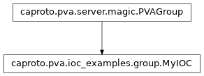

caproto.pva.ioc_examples.group.MyIOC¶

-
class
caproto.pva.ioc_examples.group.MyIOC(prefix, *, macros=None, parent=None, name=None)[source]¶ MyIOC pvproperties¶ Attribute
Suffix
Docs
Type
Notes
Alarm Group
long_write
long_writeMyData
Put
rpc
rpcMyData
test
testMyData
Startup Shutdown Put
test2
test2MyData
Startup
test3
test3type
Methods
group_read(instance, request)Generic read called for channels without get defined
group_write(instance, update)Generic write called for channels without put defined
Attributes
array_type_maptype_mappvproperty methods
-
rpc.call(self, instance, value)¶
Source code: rpc.rpc
69 70 71 72 73 74 75 76 77 78 79 80
@rpc.call async def rpc(self, instance, data): # Some awf... nice normative type stuff comes through here (NTURI): print('RPC call data is', data) print('Scheme:', data.scheme) print('Query:', data.query) print('Path:', data.path) # Echo back the query value, if available: query = data.query value = int(getattr(query, 'value', '1234')) return MyData(value=value)
-
test.startup(self, instance, async_lib)¶
45 46 47 48 49 50 51 52 53 54
@test.startup async def test(self, instance, async_lib): self.async_lib = async_lib while True: async with self.test as test: test.value = test.value + 1 test.info = f'testing {test.value}' await async_lib.library.sleep(0.5)
-
test.shutdown(self, instance, async_lib)¶
56 57 58
@test.shutdown async def test(self, instance, async_lib): print('shutdown')
-
test2.startup(self, instance, async_lib)¶
60 61 62 63 64 65 66 67
@test2.startup async def test2(self, instance, async_lib): while True: async with self.test2 as test2, self.test3 as test3: # Swap values test2.value, test3.value = int(test3.value), float(test2.value) await async_lib.library.sleep(2.0)
-